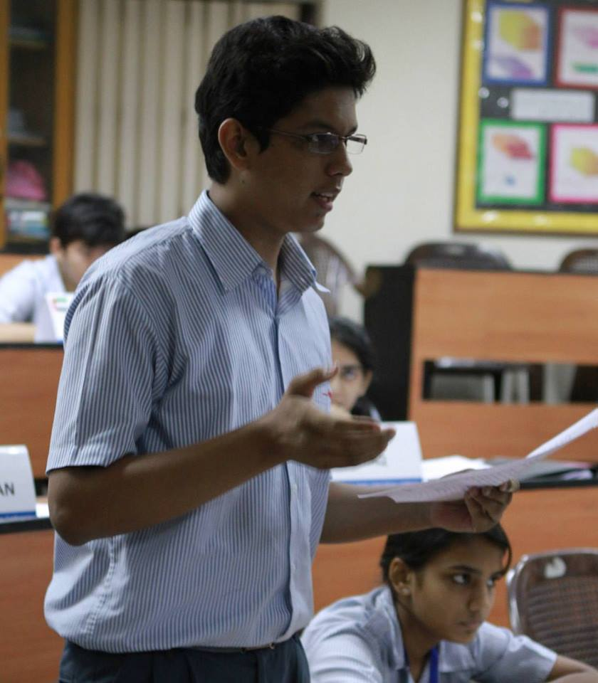
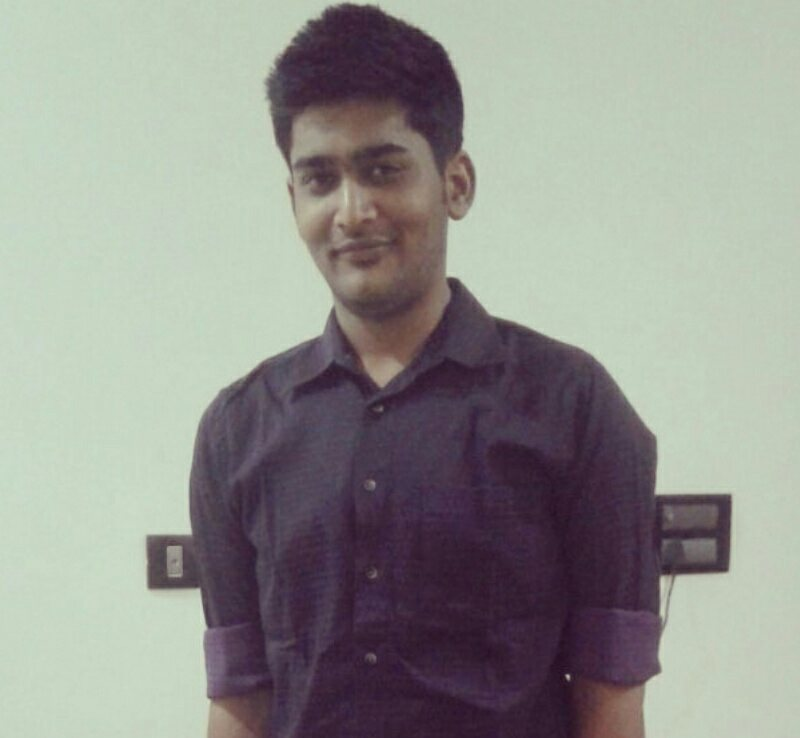
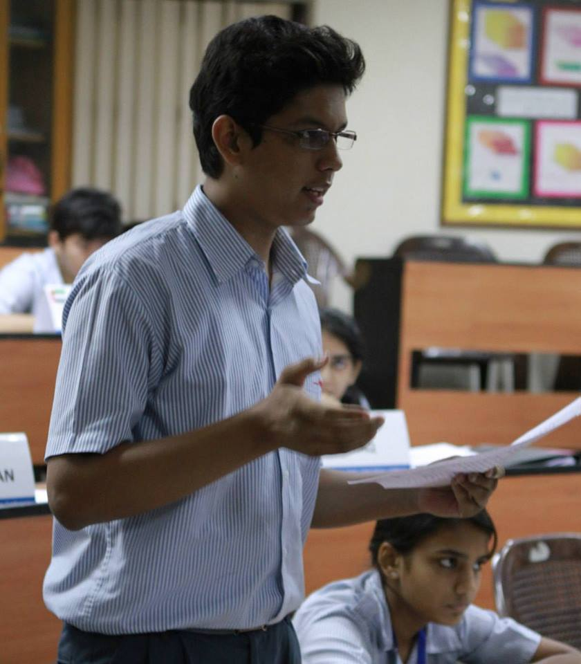
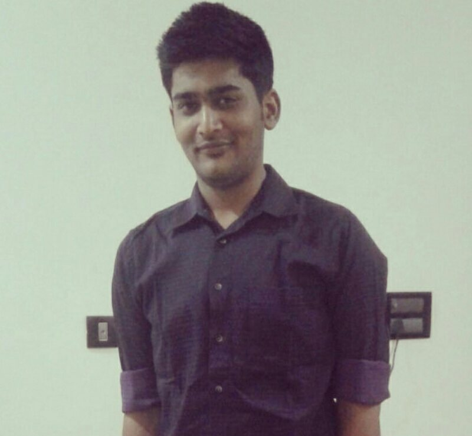

JIIT Life is a student welfare web-space wherein polls on various areas of the college are conducted along with
surveys that are of concern to the students. The results will directly be forwarded to the appropriate department of
the college for student welfare. A platform for students to get their voices heard, JIIT Life is a discussion forum for
the students, a way to express collective opinion and communicate in order to form a method to address grievances.


Be a part of your college's own
student welfare portal, and get
your voice heard.
Create your own surveys or
participate in existing ones
and help build a better
environment for students.
Participate in college elections
as a candidate or a voter
and other fun polls
based on popular demand!
 


